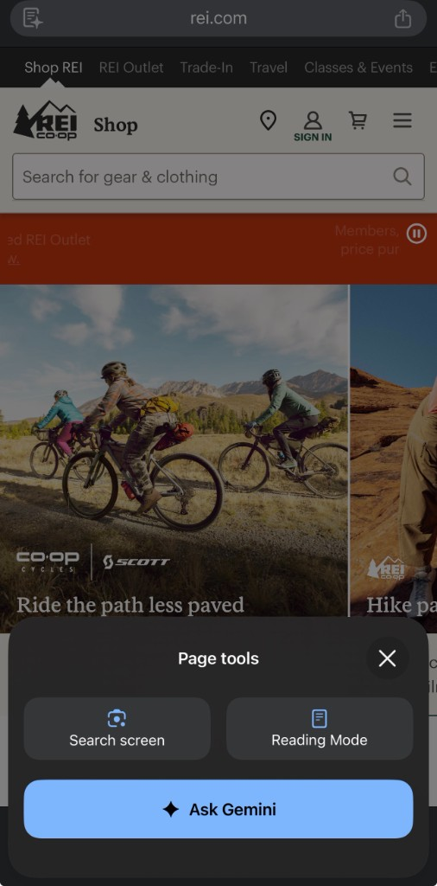
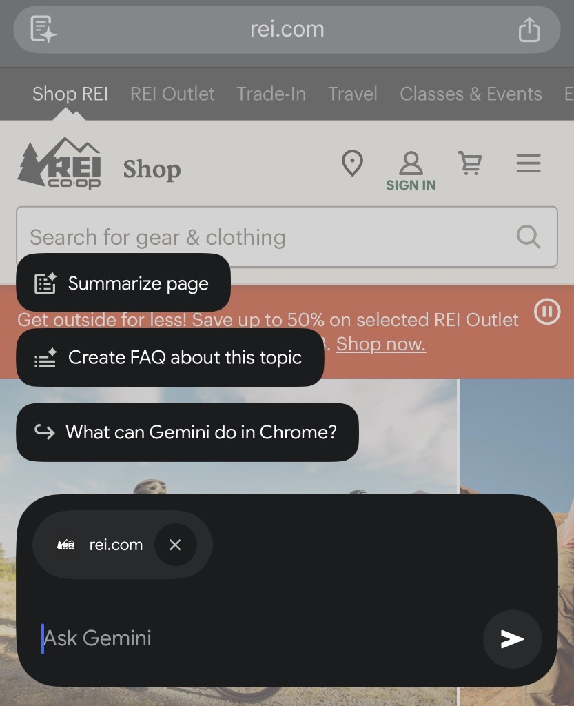
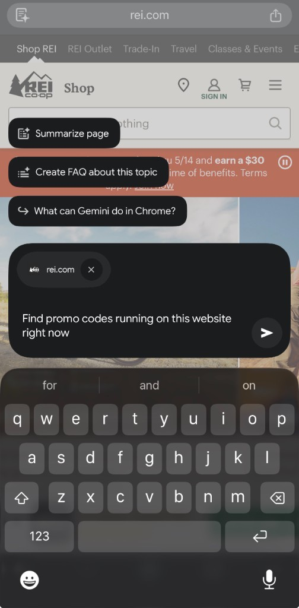
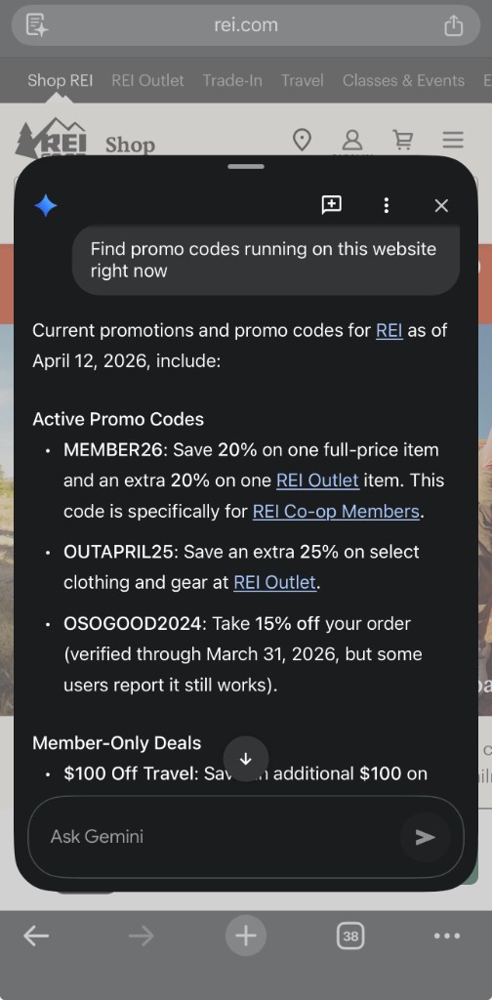
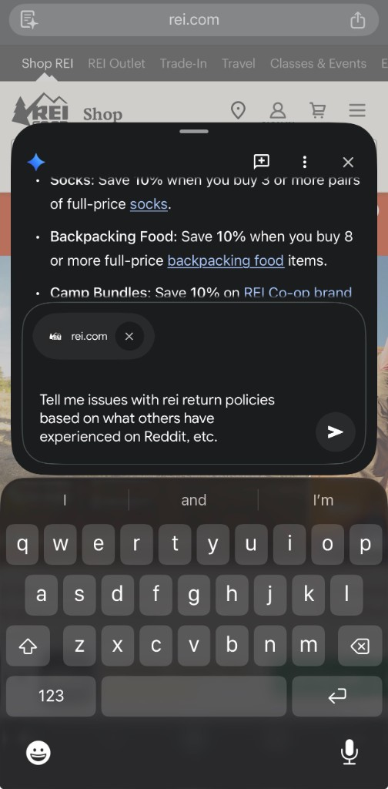
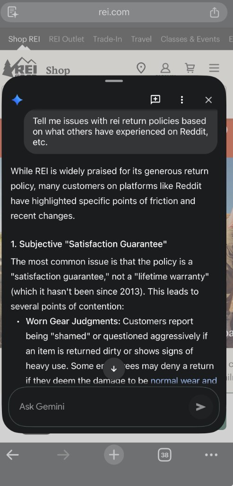
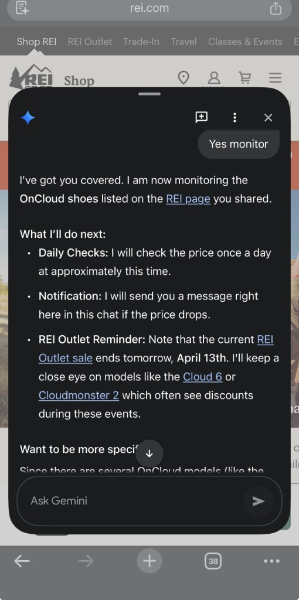

How to use Chrome mobile AI mode on any website (step-by-step)
Most people still treat mobile browsing like 2018: scroll, skim, open ten tabs, forget what they read, then start over. Chrome mobile now includes a conversational assistant layer that can summarize, compare, and reason with you on-page. It is basically a browser-native assistant workflow.
Below is a real screenshot sequence (REI example) showing how to use this feature to make faster decisions. The workflow is reusable on any shopping site, docs page, travel booking site, pricing page, or policy page.
Step-by-step: using browser AI on a live website
Step 1: open page tools and launch assistant

Prompt pattern: "Summarize this page in 5 bullet points for a buyer in a hurry."
Mistake to avoid: asking broad generic questions before establishing page context.
Step 2: pick a high-value first task

Prompt pattern: "Create a FAQ from this page focused on price, returns, and delivery."
Mistake to avoid: using the first answer as final truth without clicking source links.
Step 3: ask for a specific commercial objective

Prompt pattern: "Find active promo logic on this site and separate member-only vs public offers."
Mistake to avoid: asking "any deals?" instead of stating constraints (public vs member, time-bound, category-specific).
Step 4: get structured output you can act on

Prompt pattern: "Return this as a table: code, discount, eligibility, expiration risk, confidence."
Mistake to avoid: applying codes without checking timestamp and eligibility rules.
Step 5: escalate to risk questions (not just convenience)

Prompt pattern: "Tell me likely friction points in returns/policies and what I should verify before buying."
Mistake to avoid: confusing social chatter with policy fact; always verify against official policy page.
Step 6: ask for synthesis, not just extraction

Prompt pattern: "Give me a decision brief: risks, mitigations, and recommended next action in 5 bullets."
Mistake to avoid: stopping at a list when you need a decision recommendation.
Step 7: convert insight into ongoing monitoring

Prompt pattern: "Track price changes and remind me only when discount exceeds X% with timestamped evidence."
Mistake to avoid: assuming passive monitoring replaces manual verification for high-value purchases.
Prompts you can use on any website
- "Summarize this page for a [role] trying to decide in under 2 minutes."
- "Create a FAQ focused on price, policy, timeline, and hidden constraints."
- "List what is clear vs unclear. Then tell me 3 follow-up questions to ask."
- "Compare option A vs B from this page only; mark assumptions explicitly."
- "Give me a decision memo: buy now, wait, or skip, and why."
Safety checks (important)
- Verify claims against official policy and checkout pages.
- Treat AI output as draft analysis, not legal or financial certainty.
- For important purchases, keep screenshots/notes of what was shown and when.
If you want better results from all assistants (not just this one), our prompt library, tools comparison, and career hub will help you run the same process across platforms.